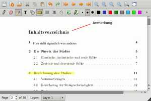

Xournal
Dieser Artikel wurde für die folgenden Ubuntu-Versionen getestet:
Ubuntu 16.04 Xenial Xerus
Ubuntu 14.04 Trusty Tahr
Zum Verständnis dieses Artikels sind folgende Seiten hilfreich:
Xournal  ist ein Programm zum einfachen Erstellen von Notizen und Skizzen, welches aber auch zum Bearbeiten von PDF-Dateien verwendet werden kann. Xournal verhält sich dabei wie ein Bildbearbeitungsprogramm. Daten werden als Datei mit der Endung .xoj gespeichert. Diese kann mit einer PDF-Datei als Hintergrund versehen werden. Auch eine Funktion zum (erneuten) Exportieren als PDF-Datei ist vorhanden.
ist ein Programm zum einfachen Erstellen von Notizen und Skizzen, welches aber auch zum Bearbeiten von PDF-Dateien verwendet werden kann. Xournal verhält sich dabei wie ein Bildbearbeitungsprogramm. Daten werden als Datei mit der Endung .xoj gespeichert. Diese kann mit einer PDF-Datei als Hintergrund versehen werden. Auch eine Funktion zum (erneuten) Exportieren als PDF-Datei ist vorhanden.
Besonders praktisch ist das Programm bei Verwendung eines Grafiktabletts. Da für die Oberfläche die Grafikbibliothek GTK+ verwendet wird, lässt es sich neben GNOME auch unter Xfce und LXDE einsetzen.
Installation¶

Für das Programm muss folgendes Paket installiert werden [1]:
xournal (universe)
 mit apturl
mit apturl
Paketliste zum Kopieren:
sudo apt-get install xournal
sudo aptitude install xournal
Verwendung¶
Bei Ubuntu-Varianten mit einem Anwendungsmenü erfolgt der Programmstart über den Eintrag "Zubehör -> Xournal" [2].
Xournal besitzt folgende Funktionen:
|  |
| Xournal |
| Funktionen | |
| Symbol | Beschreibung |
| Stift-Werkzeug | |
| Radier-Werkzeug | |
| Schrift-Werkzeug | |
| Texthervorhebung | |
| Umriss-Erkennung | |
Umriss-Erkennung¶
Das Programm besitzt eine Umriss-Erkennung. Beim Zeichnen von einfachen Figuren werden Freihandzeichnungen in saubere Linien umgewandelt. Dies funktioniert allerdings nur bei aus geraden Linien bestehenden Formen zuverlässig. Jede Linie muss dabei einzeln gezeichnet werden.
Problembehebung¶
Touchpad¶
Unter Umständen funktioniert bei Notebooks das Touchpad nicht. Dann sollte man eine externe Maus nutzen.
Papierformat¶
Wenn beim Neustart das Papierformat/-design trotz Haken bei "Einstellungen automatisch speichern" wieder auf US Letter und liniert mit Rand steht, ist es notwendig, den Abschnitt [paper] in der Konfigurationsdatei ~/.xournal/config zu editieren [3] (Xournal vorher beenden).
[paper] # Standard-Seitenbreite, in Punkten (1/72 in) # (595.28 Punkte sind 210 mm, die Breite einer DIN-A4-Seite) width=595.28 # Standard-Seitenhöhe, in Punkten (1/72 in) # (841.89 Punkte sind 297 mm, die Höhe einer DIN-A4-Seite) height=841.89 # Standard-Papierfarbe color=white # Standard-Papierart (blanko, liniert mit Rand, liniert oder kariert) # (graph bedeutet kariert) style=graph [...]
Weitere Details zur Konfigurationsdatei gibt es im Handbuch auf der Projektseite.
- Erstellt mit Inyoka
-
 2004 – 2017 ubuntuusers.de • Einige Rechte vorbehalten
2004 – 2017 ubuntuusers.de • Einige Rechte vorbehalten
Lizenz • Kontakt • Datenschutz • Impressum • Serverstatus -
Serverhousing gespendet von